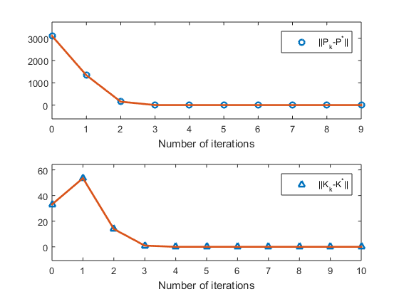
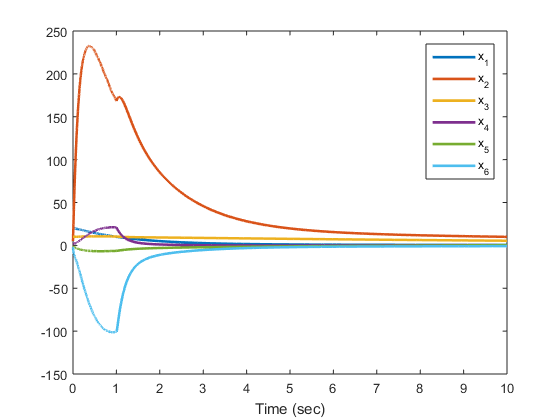
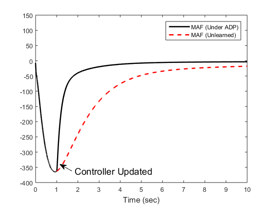

Off-policy learning for a turbocharged diesel engine
This is the Numerical Example 2.2 in Chapter 2 of book Robust Adaptive Dynamic Programming by Yu Jiang and Zhong-Ping Jiang
Contents
Parameters configuration
xn = 6; un = 2; % Set the weighting matrices for the cost function Q = diag([100 0 0 0 0 100]); R = diag([1 1]); % Initialize the feedback gain matrix Kinit = zeros(un,xn); %Only if A is Hurwitz, K can be set as zero. K = Kinit; N = 100; %Length of the window, should be at least xn^2+2*xn*un MaxIteration = 10; %Max iteration times T = 0.01; %Length of each integration interval x0 = [20;5;10;2;-1;-2]; %Initial condition expl_noise_freq = (rand(un,100)-.5)*100; % Exploration noise frequencies % Matrices to collect online data and perform learning Dxx=[]; Ixx=[]; Ixu=[]; % Initial condition of the augmented system X=[x0;kron(x0',x0')';kron(x0,zeros(un,1))]';
Run the simulation and obtain the data matrices \delta_{xx},
%I_{xx}, and I_{xu} ifLearned = 0; x_save=[]; t_save=[]; for i=1:N % Simulation the system and at the same time collect online info. [t,X] = ode45(@(t,x)aug_sys(t,x,K,ifLearned,expl_noise_freq), ... [(i-1)*T,i*T],X(end,:)); %Append new data to the data matrices Dxx=[Dxx;kron(X(end,1:xn),X(end,1:xn))-kron(X(1,1:xn),X(1,1:xn))]; Ixx=[Ixx;X(end,xn+1:xn+xn^2)-X(1,xn+1:xn+xn^2)]; Ixu=[Ixu;X(end,xn+xn^2+1:end)-X(1,xn+xn^2+1:end)]; % Keep track of the system trajectories x_save=[x_save;X]; t_save=[t_save;t]; end ifLearned = 1; % Mark learning finished P_old = zeros(xn); P = eye(xn)*10; % Initialize the previous cost matrix it = 0; % Counter for iterations p_save = []; % Track the cost matrices in all the iterations k_save = []; % Track the feedback gain matrix in each iterations % The system matrices are copied here only for the purpose of analyzing the % results A = [-0.4125 -0.0248 0.0741 0.0089 0 0; 101.5873 -7.2651 2.7608 2.8068 0 0; 0.0704 0.0085 -0.0741 -0.0089 0 0.0200; 0.0878 0.2672 0 -0.3674 0.0044 0.3962; -1.8414 0.0990 0 0 -0.0343 -0.0330; 0 0 0 -359 187.5364 -87.0316]; B = [-0.0042 0.0064 -1.0360 1.5849 0.0042 0; 0.1261 0; 0 -0.0168; 0 0]; [Kopt,Popt] = lqr(A,B,Q,R); % Calculate the ideal solution for comparion purpose k_save = norm(K-Kopt); % keep track of the differences between the actual K % and the idea valu
Off-policy learning using the collected online data
while norm(P-P_old)>1e-8 & it<MaxIteration it = it+1; % Update and display the # of iters P_old = P; % Update the previous cost matrix QK = Q+K'*R*K; % Update the Qk matrix Theta = [Dxx,-Ixx*kron(eye(xn),K')-Ixu]; % Left-hand side of % the key equation Xi = -Ixx*QK(:); % Right-hand side of the key equation pp = pinv(Theta)*Xi; % Solve the equations in the LS sense P = reshape(pp(1:xn*xn), [xn, xn]); % Reconstruct the symmetric matrix P = (P + P')/2; BPv = pp(end-(xn*un-1):end); K = inv(R)*reshape(BPv,un,xn)/2;% Get the improved gain matrix p_save = [p_save,norm(P-Popt)]; % Keep track of the cost matrix k_save = [k_save,norm(K-Kopt)]; % Keep track of the control gains disp(['K_', num2str(it), '=']); disp(K); end
K_1=
47.8327 0.7785 2.9004 42.1546 -24.8890 -0.0909
38.7652 0.4848 0.5802 20.7824 -11.6966 0.0712
K_2=
20.3866 0.4444 1.2041 27.3859 -15.6168 -0.1539
18.1105 0.2602 0.0325 11.4404 -6.2470 0.0293
K_3=
11.3687 0.3886 0.4585 24.9271 -13.7566 -0.1668
9.6886 0.2055 0.0396 9.3035 -5.0997 0.0184
K_4=
10.7552 0.3875 0.4006 24.8447 -13.6680 -0.1672
9.0006 0.2031 0.0681 9.2035 -5.0791 0.0180
K_5=
10.7537 0.3875 0.4006 24.8446 -13.6677 -0.1672
8.9983 0.2031 0.0682 9.2032 -5.0795 0.0180
K_6=
10.7537 0.3875 0.4005 24.8446 -13.6678 -0.1672
8.9983 0.2031 0.0682 9.2032 -5.0795 0.0180
K_7=
10.7537 0.3875 0.4006 24.8446 -13.6677 -0.1672
8.9983 0.2031 0.0681 9.2032 -5.0796 0.0180
K_8=
10.7537 0.3875 0.4006 24.8446 -13.6677 -0.1672
8.9983 0.2031 0.0682 9.2032 -5.0795 0.0180
K_9=
10.7537 0.3875 0.4006 24.8446 -13.6677 -0.1672
8.9983 0.2031 0.0681 9.2032 -5.0795 0.0180
K_10=
10.7537 0.3875 0.4006 24.8446 -13.6677 -0.1672
8.9983 0.2031 0.0682 9.2032 -5.0795 0.0180
Post-learning simulations
[tt,xx]=ode45(@(t,x)aug_sys(t,x,K,ifLearned,expl_noise_freq), ... [t(end) 10],X(end,:)'); % Keep track of the post-learning trajectories t_final = [t_save;tt]; x_final = [x_save;xx]; % For comparson, also get the unlearned simulation [ttt,xxx]=ode45(@(t,x)aug_sys(t,x,Kinit,ifLearned,expl_noise_freq), ... [t(end) 10],X(end,:)'); t_unlearned = [t_save;ttt]; x_unlearned = [x_save;xxx];
Plotting results
figure(1) subplot(211) plot(0:length(p_save)-1,p_save,'o',0:length(p_save)-1,p_save,'Linewidth',2); ylim([-max(p_save)*0.2 max(p_save)*1.2]); legend('||P_k-P^*||') xlabel('Number of iterations') subplot(212) plot(0:length(k_save)-1,k_save,'^',0:length(k_save)-1,k_save,'Linewidth',2) ylim([-max(k_save)*0.2 max(k_save)*1.2]); legend('||K_k-K^*||') xlabel('Number of iterations') % Uncomment to save figure % print('Ch2_ex2_fig1_pk','-depsc') figure(2) plot(t_final,x_final(:,1:6),'Linewidth',2) legend('x_1','x_2','x_3','x_4','x_5','x_6') xlabel('Time (sec)') figure(3) plot(t_final, 3.6*x_final(:,6),'k-', ... ttt, 3.6*xxx(:,6),'r--', ... 'Linewidth',2) ylim([-400 150]) legend('MAF (Under ADP)', 'MAF (Unlearned)') xlabel('Time (sec)','FontSize',12) % Create textarrow annotation(figure(3),'textarrow',[0.2630173564753 0.218958611481976],... [0.166023166023166 0.198841698841699],'String',{'Controller Updated'},... 'FontSize',14); % Uncomment to save figure % print('Ch2_ex2_fig2_y','-depsc')  
Display results
disp('Approximate Cost Matrix') P disp('Optimal Cost Matrix') Popt disp('Approximate Gain Matrix') K disp('Optimal Gain Matrix') Kopt
Approximate Cost Matrix
P =
766.7587 1.4019 97.3262 119.0936 -111.2561 0.6265
1.4019 0.1032 -0.6581 3.9893 -1.8219 0.0150
97.3262 -0.6581 71.6924 -1.3764 -29.0646 0.0230
119.0936 3.9893 -1.3764 233.8102 -126.0940 -1.1828
-111.2561 -1.8219 -29.0646 -126.0940 88.0898 0.5859
0.6265 0.0150 0.0230 -1.1828 0.5859 0.5687
Optimal Cost Matrix
Popt =
766.7586 1.4020 97.3265 119.0937 -111.2549 0.6265
1.4020 0.1032 -0.6581 3.9893 -1.8221 0.0150
97.3265 -0.6581 71.6915 -1.3767 -29.0678 0.0230
119.0937 3.9893 -1.3767 233.8101 -126.0952 -1.1828
-111.2549 -1.8221 -29.0678 -126.0952 88.0775 0.5859
0.6265 0.0150 0.0230 -1.1828 0.5859 0.5687
Approximate Gain Matrix
K =
10.7537 0.3875 0.4006 24.8446 -13.6677 -0.1672
8.9983 0.2031 0.0682 9.2032 -5.0795 0.0180
Optimal Gain Matrix
Kopt =
10.7537 0.3875 0.4006 24.8446 -13.6677 -0.1672
8.9983 0.2031 0.0681 9.2032 -5.0796 0.0180